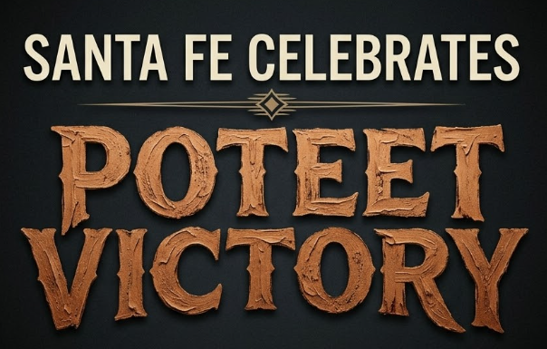
A month-long immersive art celebration anchored to Indian Market season — transforming Santa Fe's landmark public spaces into living canvases. Designed as a recurring annual tradition, with a new featured Indigenous artist each year.
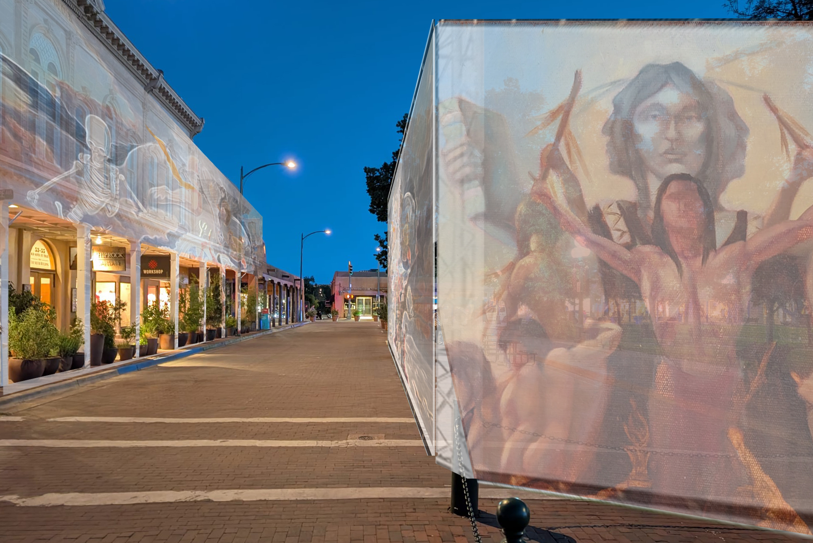
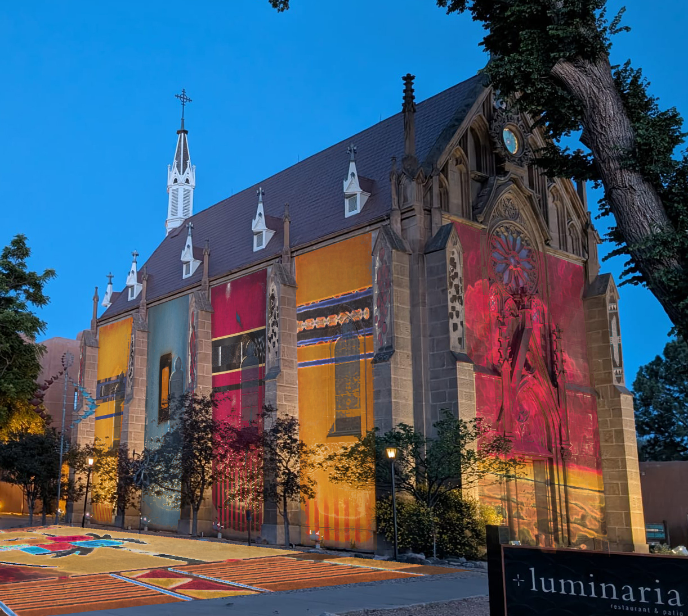
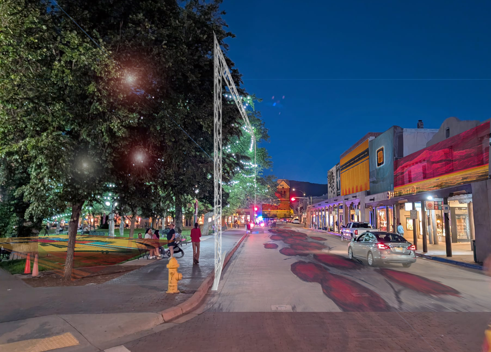
Santa Fe Celebrates is a month-long public art event that transforms Santa Fe's most iconic landmarks into monumental living canvases. Every night in August 2026, Poteet Victory's work is projected across the Plaza, the Cathedral Basilica, Loretto Chapel, La Fonda on the Plaza, and city parks.
The work of Cherokee-Choctaw master painter Poteet Victory — palette-knife built, abstract, spiritually charged — rendered at scales never before seen. The city itself becomes the frame.
The immersive technology is led by Massimiliano ("Max") Siccardi — the world's most-produced creator of large-scale immersive experiences and creative director of the globally acclaimed Van Gogh Immersive, seen by 4.5M+ visitors in North America and 2M+ in Paris alone.
Santa Fe Celebrates is designed to recur each August — rotating featured artist, deepening the city's identity as the world capital of Indigenous art. Year One is Poteet Victory. Year Two, a new Indigenous master. Every August, a new story.
Year One anchors the event to the Victory on the Big Screen media slate: the Victory narrative feature film, the Outside the Frame docuseries, and The Invisible Canvas immersive experience — a convergent cultural moment pointing at Santa Fe.
By owning August, Santa Fe claims a month that already draws 115,000+ visitors for Indian Market and extends that cultural moment into a month-long event that fills hotels, restaurants, and galleries for four weeks — not a weekend.
The infrastructure exists. The audience exists. The art exists.— The Santa Fe Celebrates Proposition
What Santa Fe has never done is transform itself into the art.
Santa Fe already owns the most celebrated collection of historic public spaces in the American Southwest. Santa Fe Celebrates puts Poteet Victory's art on all of them — simultaneously, every night for a month.
His name comes from two worlds that shaped everything he ever made. Poteet, from his mother's Cajun side. Victory, from his grandmother Willie Victory — a full-blood Cherokee-Choctaw woman whose storytelling planted the seed of every painting that followed.
Born in Idabel, Oklahoma in 1947, 90 miles from the end of the Trail of Tears. Bull rider at thirteen. Hippie commune in Maui. A silk-screen empire in Dallas with clients including Willie Nelson, Waylon Jennings, CBS Records, and Frito-Lay. Then he sold it, met Andy Warhol, studied at the Art Students League, moved to Santa Fe in 1989 with nothing — and invented an entirely new visual language.
He abandoned the brush entirely for the palette knife, building paintings in dense, glossy layers that carry Indigenous symbols and spiritual archetypes without ever illustrating them literally. Gallery owners say the work sells before it dries.
He is now the first inductee to the Semple Museum of Native American Art Hall of Fame, a Smithsonian collection artist, and owner of Victory Contemporary Gallery at 124 W. Palace Ave., Santa Fe.
Three cities have already proven what happens when you transform landmark architecture into public art. The data isn't aspirational — it's documented. Cincinnati built $142M in economic impact from a 4-day event. Amsterdam fills hotels for seven weeks. Barcelona draws 300,000 people in 3 nights. Santa Fe Celebrates deploys the same proven mechanism — anchored to 115,000+ visitors already coming for Indian Market.
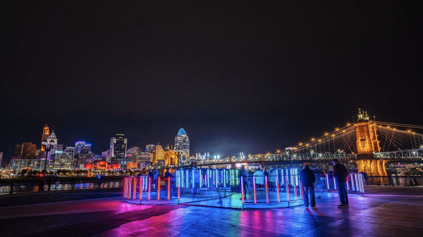
The 2022 edition generated a $126M direct economic impact for the Cincinnati region from a 4-day free event. The 2024 edition grew that to $142M in total visitor spending, with attendees from 15 countries and 19% coming from outside the region.
$1.5M in direct artist commissions, honorariums, and art fees in 2022 alone — 71 artists from 18 international countries plus local talent. A genuine creative economy generator, not just a tourism draw.
Cincinnati Mayor Aftab Pureval: "BLINK has firmly established itself as a cultural icon that reverberates energy and excitement across the globe." A city with no prior claim to global art status repositioned itself as a world-class destination — and is now expanding internationally for 2026.
Blink is free and covers 30 city blocks — including historically underinvested neighborhoods. 2 million people sharing the same public space for the same experience. The social capital generated is immeasurable.
A city with no pre-existing claim to global art status built $126–142M in economic impact and a lasting international reputation — from 4 days and public architecture it already owned.
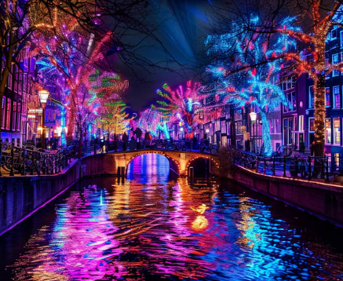
Designed for one explicit purpose: extend the tourism season into winter. It now draws over a million visitors annually — consistently filling hotels during what had been the city's quietest months. Two consecutive years above 1 million visitors.
Amsterdam now faces the opposite of a tourism problem — the city has imposed a cap of 20 million overnight stays annually and banned new hotel construction. The Light Festival helped build a year-round demand profile so strong the city has to limit it.
Transforms Amsterdam's UNESCO-listed canals into an open-air gallery — reinforcing the city's identity as a UNESCO Creative City of Design. Fourteen editions in, it is a defining feature of Amsterdam's global cultural brand.
Seven consecutive weeks of programming means seven consecutive weeks of hotel occupancy, restaurant revenue, retail spending. A single weekend generates a spike; a month-long event generates a sustained economic ecosystem. This is the Amsterdam model — and the Santa Fe Celebrates model.
Amsterdam built a 7-week tourism anchor in its slowest season, now drawing 1M+ visitors annually. The cultural identity reinforcement was so successful the city's tourism problem flipped from too little to too much.
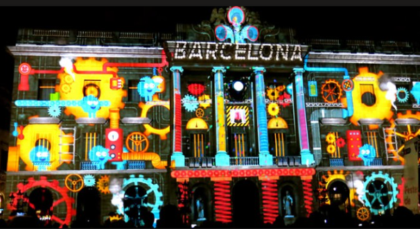
Llum BCN takes place in February — the quietest month of the year. 300,000 visitors in 3 nights, generating substantial revenue for hotels, restaurants, and retail in a period that would otherwise underperform. A pure stimulus mechanism.
Anchored in Poblenou, once an industrial district. Llum BCN positioned it as Barcelona's creative and innovation hub — attracting tech companies, design studios, and cultural institutions. Light art as urban economic development.
Organized and funded by the Barcelona City Council's Institut de Cultura. The city treats it as infrastructure — a recurring investment that pays returns in tourism, identity, and civic pride. The $2M ask for Santa Fe Celebrates follows this exact model.
Barcelona is the 2026 World Capital of Architecture — and Llum BCN is woven into that identity. Projection mapping on existing architecture is not separate from cultural identity; it is cultural identity, expressed at scale.
Barcelona fills its slowest 3 nights with 300,000 visitors while repositioning a neighborhood and reinforcing a global cultural brand. Santa Fe starts with an audience of over 115,000 already present for Indian Market.
Cincinnati had to build its audience from scratch. Amsterdam had to create a winter season. Barcelona had to fill a slow month. Santa Fe already has over 115,000 people arriving in August for Indian Market — the largest Indigenous art market in the world. The audience is already there.
Poteet Victory has spent 35 years building one of the most significant bodies of work in contemporary Indigenous painting. The paintings exist. The artist is here. The gallery is here. No other city in America has access to this material. Santa Fe Celebrates amplifies what is already the city's most powerful asset.
Indian Market is one weekend. Santa Fe Celebrates is a month. That means 31 nights of hotel occupancy where there was previously a spike and a drop. Restaurants, galleries, retail — all sustained at Indian Market levels for four weeks instead of two days.
Year One is Poteet Victory. Year Two, a new Indigenous master. Over a decade, Santa Fe Celebrates becomes the defining cultural event in the American Southwest — the world capital of Indigenous art, not just the world's largest Indigenous art market.
Cincinnati built $142M in impact with a 4-day event and no pre-existing art tourism infrastructure. Santa Fe starts with over $200M in Indian Market economic impact, 115,000+ visitors already present, and the world's most compelling living Indigenous artist. The question is not whether this works. The question is whether Santa Fe leads, or lets another city show it how.
Massimiliano Siccardi is the world's most-produced creator of large-scale immersive art experiences. His Van Gogh Immersive has been seen by over 4.5 million visitors in North America alone — plus 2M+ in Paris at L'Atelier des Lumières — described as "the Steven Spielberg of installation art shows."
He curated 60,600 frames of video, 90,000,000 pixels, and 500,000 cubic feet of projections set to original music for the Van Gogh experience alone. Santa Fe Celebrates brings this proven global format to the art of Poteet Victory and to the streets, façades, and public spaces of Santa Fe itself.
For the first time, a Siccardi-scale production will be applied to a living Indigenous artist's work — outdoors, across an entire city, for a month.
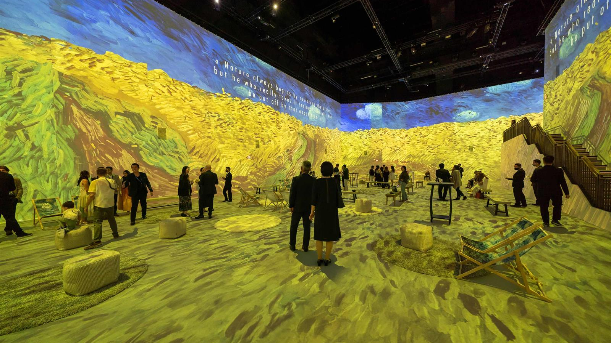
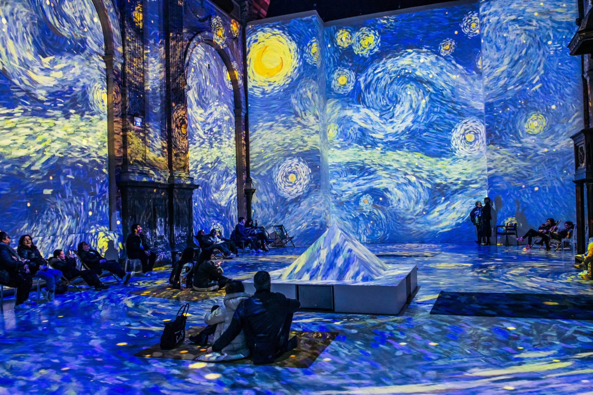
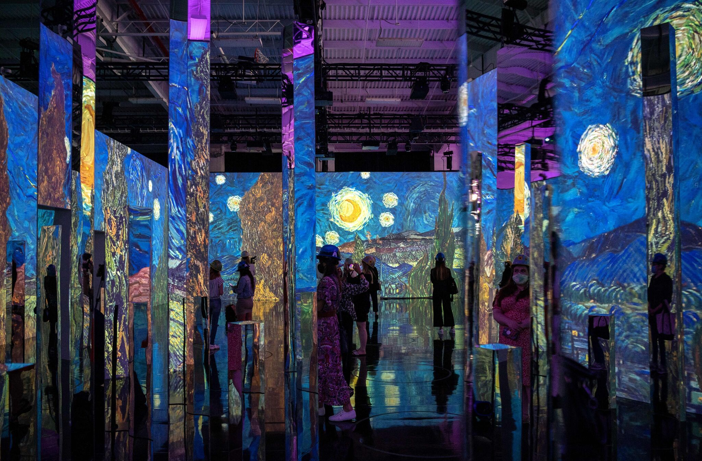
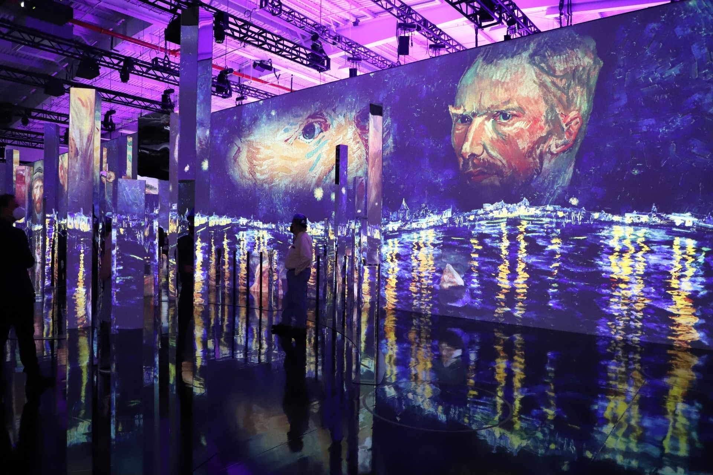
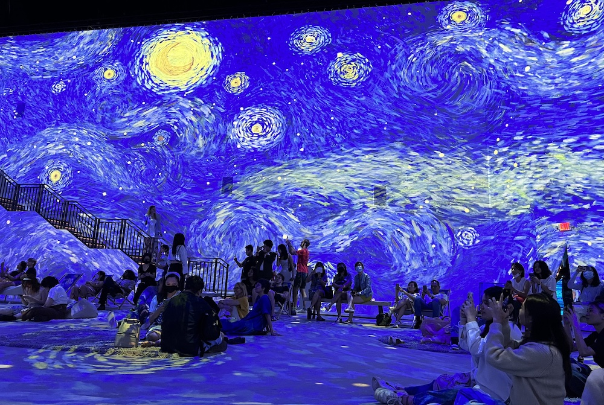
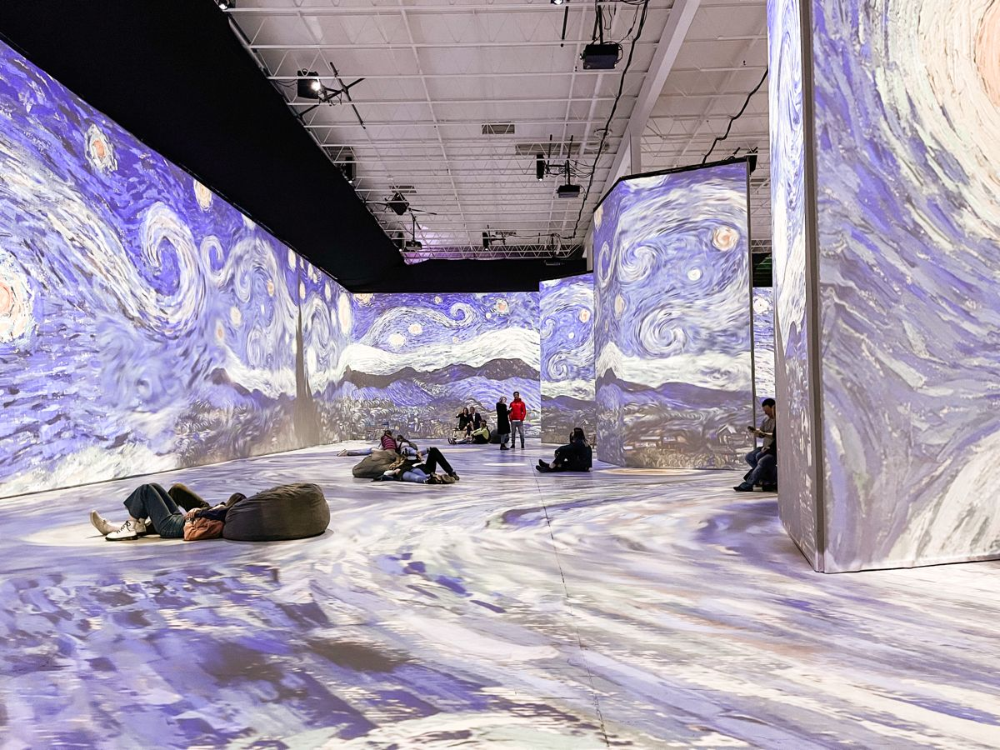
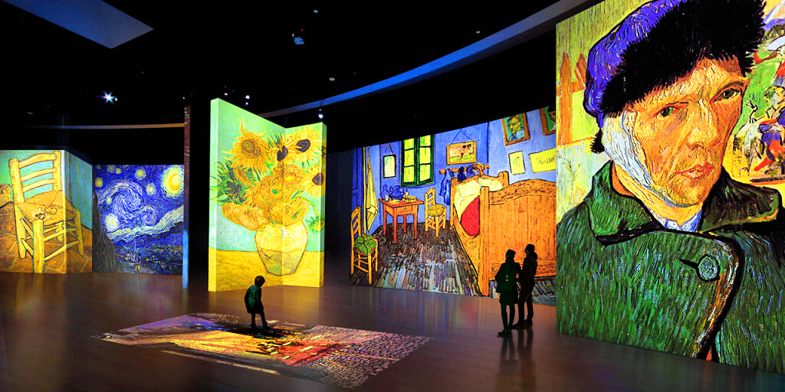
Santa Fe Celebrates runs throughout August 2026, building in intensity toward Indian Market — then sustaining through the cultural events that follow.
Santa Fe Celebrates is the live event component of a three-track media slate — each track self-standing, each amplifying the others.
Son of a Botanist Productions and Name & Like, Inc. are seeking City of Santa Fe funding, corporate sponsorship, and venue, hospitality, and cultural institution partners for Year One — Santa Fe Celebrates Poteet Victory, August 2026.